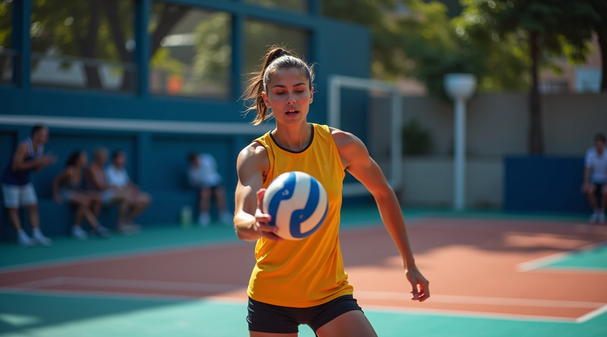
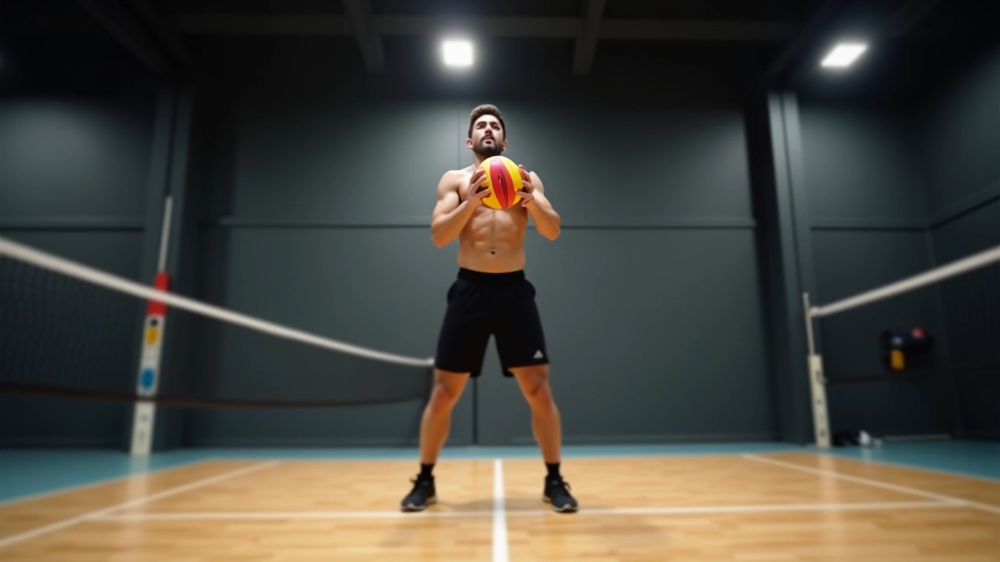
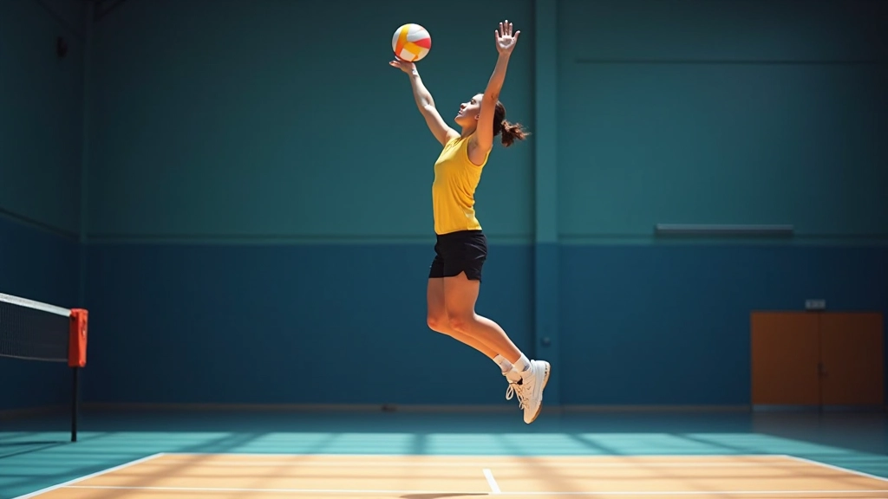
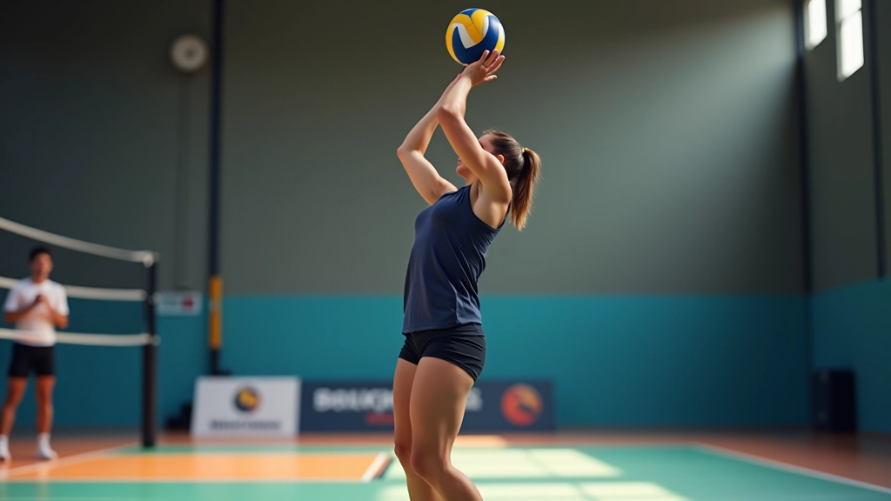
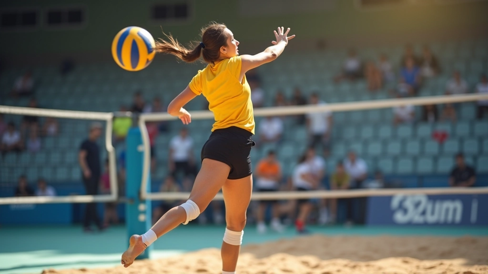
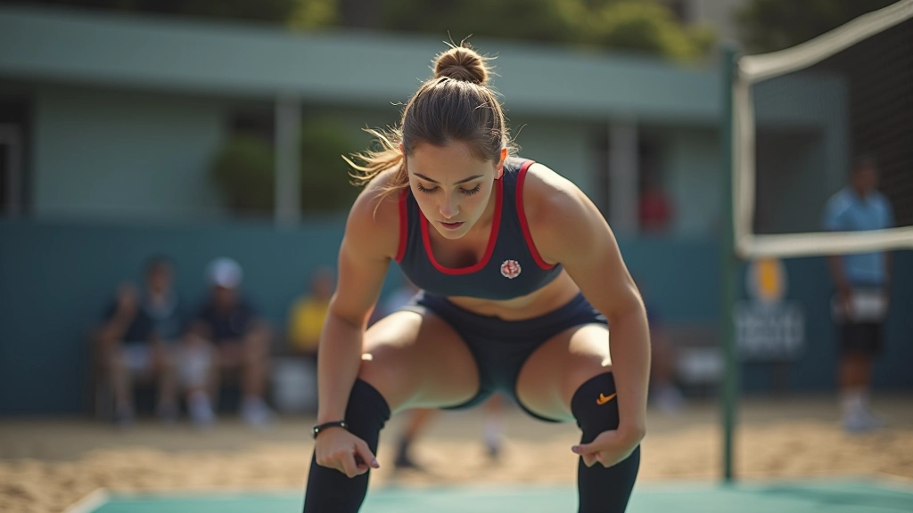

بناء القوة المتفجرة للساقين
تقويّة الساقين والقدرة على الارتقاء العالي أساسي لإرسال قفزي فعال. تعلم التدريبات المناسبة.
تعلم الخطوات الأساسية والوقفة الصحيحة لإتقان الإرسال القفزي من البداية بطريقة آمنة وفعالة


فريق المحتوى التحريري
كتبه فريق تدريب قوة الإرسال التحريري، متخصصون في تقديم إرشادات عملية وموثوقة لتطوير مهارات الإرسال القفزي.
الإرسال القفزي ليس مجرد ضربة عادية — إنه حركة متكاملة تجمع بين القوة والتقنية والتوازن. عندما تبدأ في تعلمه، ستلاحظ الفرق الحقيقي في أدائك داخل الملعب. الشيء المهم هو أنك لست بحاجة لأن تكون قوياً بشكل استثنائي في البداية — الأساليب الصحيحة والممارسة المنتظمة هي ما يصنع الفرق.
نحن نركز هنا على الخطوات الأولى. سواء كنت تتدرب وحدك أو مع فريق، ستجد أن فهم الأساسيات يوفر لك الثقة اللازمة للتقدم. الإرسال القفزي يتطلب ثلاثة أشياء رئيسية: وقفة صحيحة، حركة تصعد منتظمة، وضربة قوية ومركزة.


أول خطوة هي الوقفة الصحيحة. قف مع فتح قدميك بعرض الكتفين تقريباً. القدم المقابلة لذراعك الرامية يجب أن تكون قليلاً للأمام. هذا يعطيك التوازن والاستقرار اللازم عند الارتقاء.
أمسك الكرة بكلتا يديك على ارتفاع الصدر تقريباً. يد تحت الكرة وأخرى فوقها للتحكم. الكرة يجب أن تكون أمامك قليلاً وليس بجانبك. هذا الموضع يساعدك على رؤية الملعب والتركيز على الهدف.
لا تمسك الكرة بقوة شديدة. قبضة مرتخية تساعدك على التحكم بشكل أفضل عند رفع الكرة للأعلى.
بعد الاستعداد، تأتي مرحلة الارتقاء. اثنِ ركبتيك قليلاً وكأنك تستعد للقفز. هذا الانثناء البسيط يعطيك قوة دافعة. رفع الكرة بسلاسة للأعلى بذراعيك معاً — يجب أن تصل الكرة لارتفاع حوالي 30 سم فوق رأسك.
والآن القفزة. استخدم قوة ساقيك للارتقاء بسرعة. في نفس الوقت، افصل يديك عن الكرة — اليد التي تحتها تتحرك للأسفل، واليد التي تضرب تتحرك للأعلى والخلف. هذا يعطيك مساحة أكبر للضربة ويزيد من قوتك.

هذا هو الجزء الحاسم. عندما تصل لأعلى نقطة في قفزتك، ضرب الكرة بقوة. ذراعك يجب أن تكون مستقيمة تماماً عند الاتصال. استخدم كل جسدك — ليس فقط الذراع. الدوران من الكتف والجسم يعطيك قوة إضافية.
ركز على ضرب الكرة من المنتصف. المعصم يجب أن ينقلب قليلاً عند الضربة لإضافة دوران وسرعة. لا تضرب بقوة عشوائية — الدقة مهمة مثل القوة. حاول أن توجه الكرة لداخل الملعب بثقة.
البدايات دائماً تكون صعبة قليلاً. لكن مع التركيز على هذه النقاط، ستحسّن بسرعة
لا تحاول الإرسال من أقصى قوتك من البداية. ركز على التقنية أولاً. القوة تأتي مع الممارسة والثقة.
3-4 جلسات في الأسبوع أفضل من جلسة واحدة طويلة. كل جلسة 20-30 دقيقة مركزة تعطيك نتائج أفضل.
اطلب من مدرب أو لاعب أكثر خبرة أن ينصحك. رؤية خارجية تساعد على تصحيح الأخطاء بسرعة.
دائماً أحمِّ كتفيك وذراعيك قبل التدريب. حركات خفيفة وتمديد تحمي جسدك من الإصابات.
في البداية، الدقة أهم من السرعة. اضرب الكرة نحو الخط الخلفي للملعب. الدقة تأتي أولاً.
الكرات التي تخرج من الملعب أو لا تصل درساً قيماً. راقب ما يحدث وعدّل موضعك وقوتك.
إتقان الإرسال القفزي يحتاج صبراً وممارسة منتظمة. لا تتوقع أن تصبح خبيراً في أسبوعين — لكنك ستشعر بتحسن حقيقي بعد شهر من التدريب المركز. ركز على كل خطوة من الخطوات التي تعلمتها: الوقفة، الارتقاء، الضربة.
تذكر أن كل لاعب محترف بدأ من نفس المكان الذي أنت فيه الآن. الفرق الوحيد هو الالتزام والممارسة. استمتع بالعملية، تقبل الأخطاء كجزء من التعلم، واستمر في التقدم. بعد فترة، ستجد نفسك تقوم بإرسال قفزي قوي وموثوق.
نتائج التعلم تختلف من شخص لآخر. هذا الدليل يقدم تعليمات عملية وموثوقة، لكن التقدم يعتمد على الالتزام الشخصي والممارسة المنتظمة. استشر مدرباً محترفاً إذا كنت تشعر بألم أو قلق حول سلامتك أثناء التدريب.
تقويّة الساقين والقدرة على الارتقاء العالي أساسي لإرسال قفزي فعال. تعلم التدريبات المناسبة.

الاستقرار أثناء الإرسال يعني دقة أفضل وإصابات أقل. اكتشف كيف تحسّن توازنك.

الإصابات تقطع مسار التقدم. تعرف على كيفية حماية كتفيك وذراعيك وظهرك.